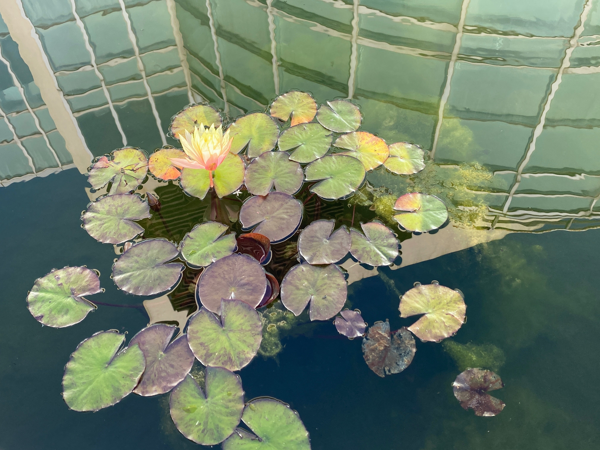

Perhaps Monet
A quiet note about water lilies, memory, and the moment ordinary life begins to look like a painting.
Personal channel · gihyun.com
Photos, thoughts, journals, words, work lessons, Bandi, and small stories I want to keep in my own place first.
A quiet feed of photos, thoughts, words, and small memories.

A quiet note about water lilies, memory, and the moment ordinary life begins to look like a painting.

A few quiet days after starting a new chapter, remembered through photos and small notes.

A small note about living with Bandi, the Corgi — and how he communicates in his own way.
This is a place where I collect notes. Over time, I hope to make a small library with them.